Home › Blog
BigCatWise blog
In depth, sourced answers to specific questions about big cats. New posts are added when there is something genuinely useful to say.
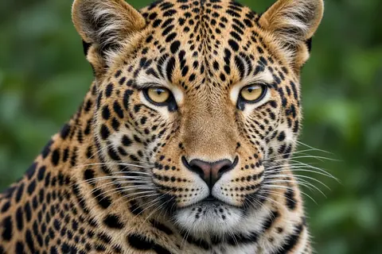
AI-generated image.How much does a leopard weigh?
Leopards weigh roughly 17 to 90 kg depending on sex and region. Typical sizes for males and females, and why published figures differ.
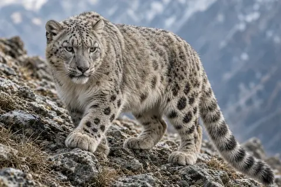
AI-generated image.How do snow leopards survive at high altitude?
Snow leopards cope with thin, cold mountain air using an enlarged nasal cavity, a deep chest, thick fur, a long tail and snowshoe paws.
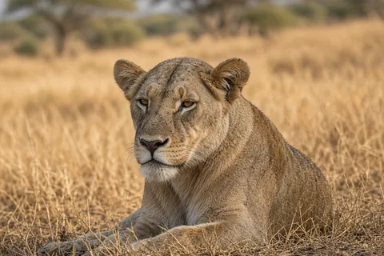
AI-generated image.How many hours do lions sleep?
Lions rest for up to 21 hours a day. Why wild lions spend so long lying around, how that differs from sleep, and why males rest longer.
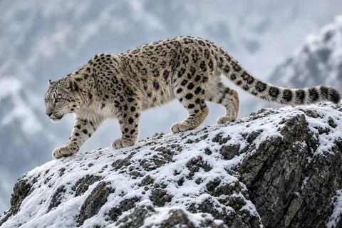
AI-generated image.Why do snow leopards have such long tails?
Snow leopards use their long, thick tails for balance on steep rocks and warmth while resting in cold mountains.
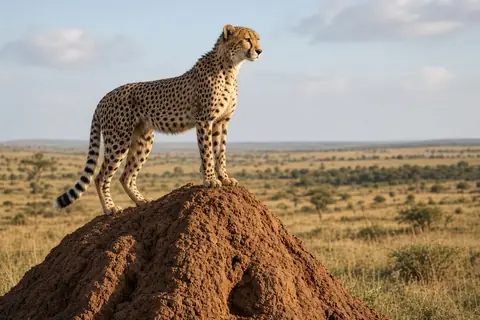
AI-generated image.What do cheetahs eat?
Cheetahs mostly eat medium sized antelope such as impala, springbok and gazelles. What a review of 23 diet studies shows about cheetah prey and why.
Which big cats can roar?
Lions, tigers, leopards and jaguars can roar; snow leopards and cheetahs cannot. Here is what the anatomy research says about why, and what the others say instead.
Leopard vs jaguar vs cheetah
How to tell a leopard, jaguar and cheetah apart in seconds: location, spot pattern, build, face and behavior, with a side by side comparison table.
How fast is a cheetah?
How fast cheetahs really run: 93 km/h measured in wild cheetahs, why most hunts are slower, how long a sprint lasts and what makes them so quick.
Why do tigers have stripes?
Why tigers have stripes: camouflage for an ambush hunter, why an orange coat looks green to deer, and how unique stripe patterns let scientists count tigers.
How many big cats are left in the wild?
Latest estimates of how many lions, tigers, leopards, jaguars, cheetahs and snow leopards remain in the wild, what the numbers mean, and which is rarest.
Why do lions live in prides?
Why lions live in groups when other big cats live alone: the field research on hunting, cub defence and territory, and what DNA revealed about pride kinship.
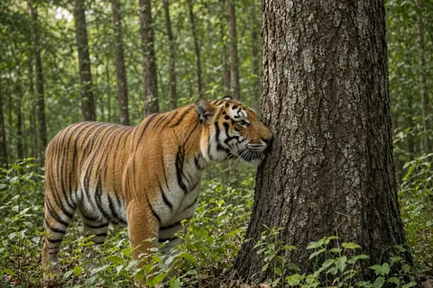
AI-generated image.How big is a tiger's territory?
A tiger's territory can be 12 km² or more than 1,000 km². Radio collar studies from Russia, Thailand and Bangladesh show why prey decides the size.
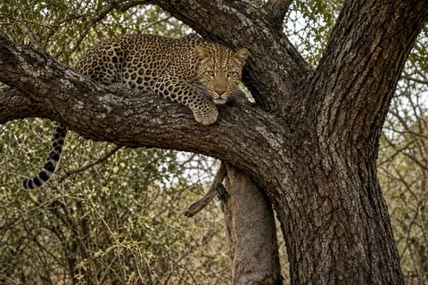
AI-generated image.Why do leopards drag their kills into trees?
Leopards hoist about half their kills into trees, mainly to stop hyenas stealing them. What a study of 2,032 kills in South Africa found.
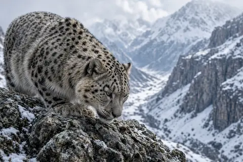
AI-generated image.What do snow leopards eat?
Snow leopards mainly eat wild mountain goats and sheep, especially ibex and blue sheep of about 55 kg. What a review of 1,696 scats and a DNA study found.
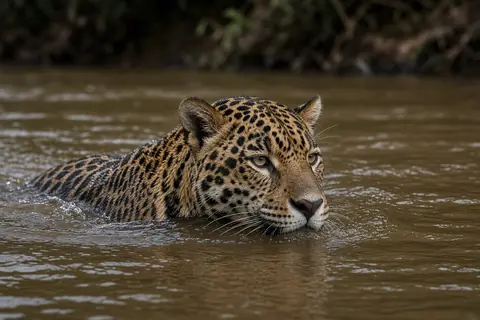
AI-generated image.Do jaguars hunt in water?
Yes. Jaguars swim and hunt fish, caiman and other aquatic prey. A Pantanal study found fish in 46% of scats and aquatic reptiles in 55%, with mammals only 11%.
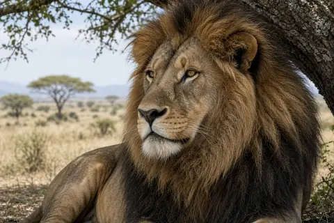
AI-generated image.Why do male lions have manes?
A lion's mane is a signal: darker manes mark healthier, higher testosterone males that females prefer. Research on mane colour, heat costs and maneless lions.
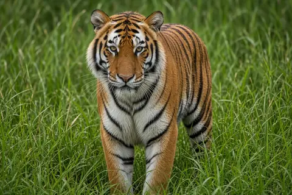
AI-generated image.Never enter a tiger enclosure: lessons from Yorkshire Wildlife Park
On 10 October 2026 a man died after entering the tiger enclosure at Yorkshire Wildlife Park. What is known, why zoo barriers matter, and how tigers hunt.
Do cheetahs abandon hunts because they overheat?
No: free-living cheetahs stop chases without overheating. Body temperature averaged 38.4 C at chase end; heat rises more after a kill than during the sprint.
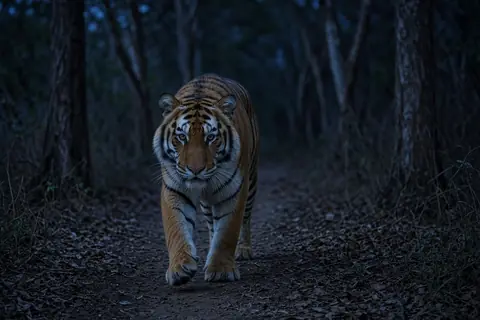
AI-generated image.Are tigers nocturnal?
Mostly, but not strictly. Wild tigers are most active at night, dawn and dusk, track their prey's schedule, and turn more nocturnal where people are busy by day.
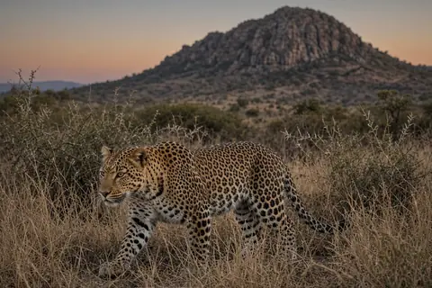
AI-generated image.Can leopards live near people?
Yes, to a striking degree. In India leopards live in dense farmland with no wild prey, eat mostly domestic animals, visit homes at night and rarely attack people.
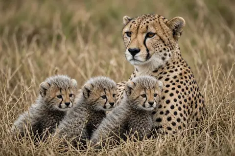
AI-generated image.Why do so few cheetah cubs survive?
On the Serengeti Plains only about 1 in 20 cheetah cubs reached independence, mostly because lions and hyenas killed them. Elsewhere, survival can be far higher.
Why do snow leopards have such low genetic diversity?
Genome studies find snow leopards have the lowest genetic diversity of any big cat, mostly because their population has always been small. Here is what that means.
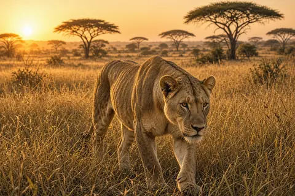
AI-generated image.How often do lion hunts succeed?
Most lion hunts fail. In one Namibian study lions made 156 kills from 920 attempts. Here is what raises their odds: teamwork, cover, prey choice and more.
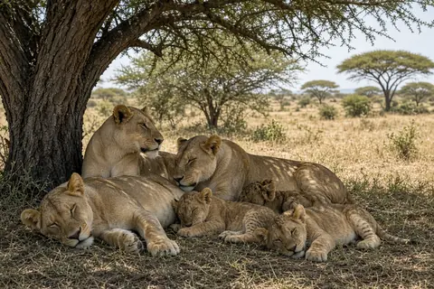
AI-generated image.What do lions eat?
Lions prefer prey weighing 190 to 550 kg, such as buffalo, wildebeest, zebra, giraffe and gemsbok. Here is what diet research shows, and why size matters.
AI-generated image.How do cheetahs live alongside lions and hyenas?
Lions and hyenas steal cheetah kills and kill cubs, yet cheetahs persist beside them. Field studies show how they avoid, eat fast and keep watch.
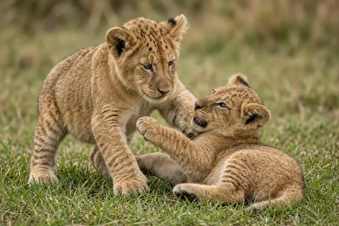
AI-generated image.Why do male lions kill cubs?
New male lions and leopards often kill cubs fathered by rivals. Field studies explain why it pays them, and how mothers fight back.
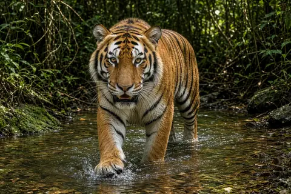
AI-generated image.What do tigers eat?
Tigers prefer large prey of 60 to 250 kg, especially wild boar and sambar deer. What diet studies from India, Nepal and Russia show about how often tigers kill.
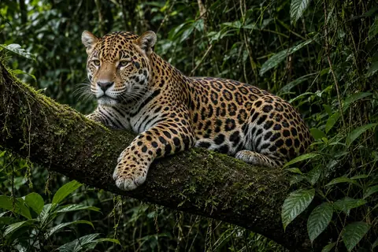
AI-generated image.What do jaguars eat?
Jaguars eat peccaries, armadillos, caiman, capybaras and more. What GPS collar and scat studies from Brazil, Belize and Guatemala show about jaguar diet.
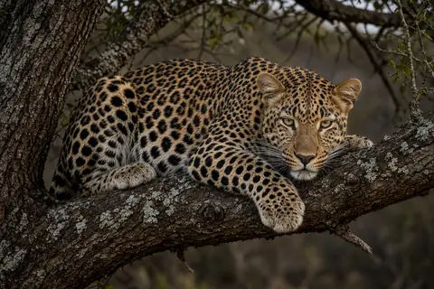
AI-generated image.What do leopards eat?
Leopards eat impala, bushbuck, duikers, hyraxes, monkeys and even dogs. What scat, kill site and prey preference studies from Africa and Asia show about leopard diet.
AI-generated image.How long do big cats live?
Lions, tigers, leopards, jaguars, cheetahs and snow leopards usually live far longer in zoos than in the wild. Species by species lifespans, sourced.
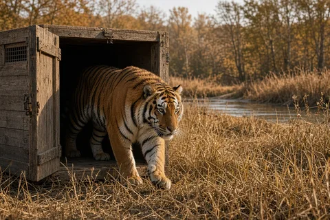
AI-generated image.Kazakhstan releases a second tiger into the wild
On 31 October 2026 Kazakhstan released a male Amur tiger named Amur in the Ile-Balkhash reserve, joining the tigress Umit. How the tiger reintroduction works and what comes next.
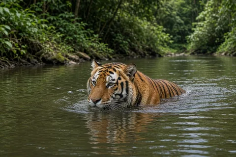
AI-generated image.Can tigers swim?
Yes. Tigers are strong swimmers that cool off, cross rivers and sometimes hunt in water. Sourced distances and behavior.
AI-generated image.How far can a lion roar be heard?
A lion's roar can carry about 8 km (5 miles) across open savanna. What the research says about distance, loudness and why lions roar.